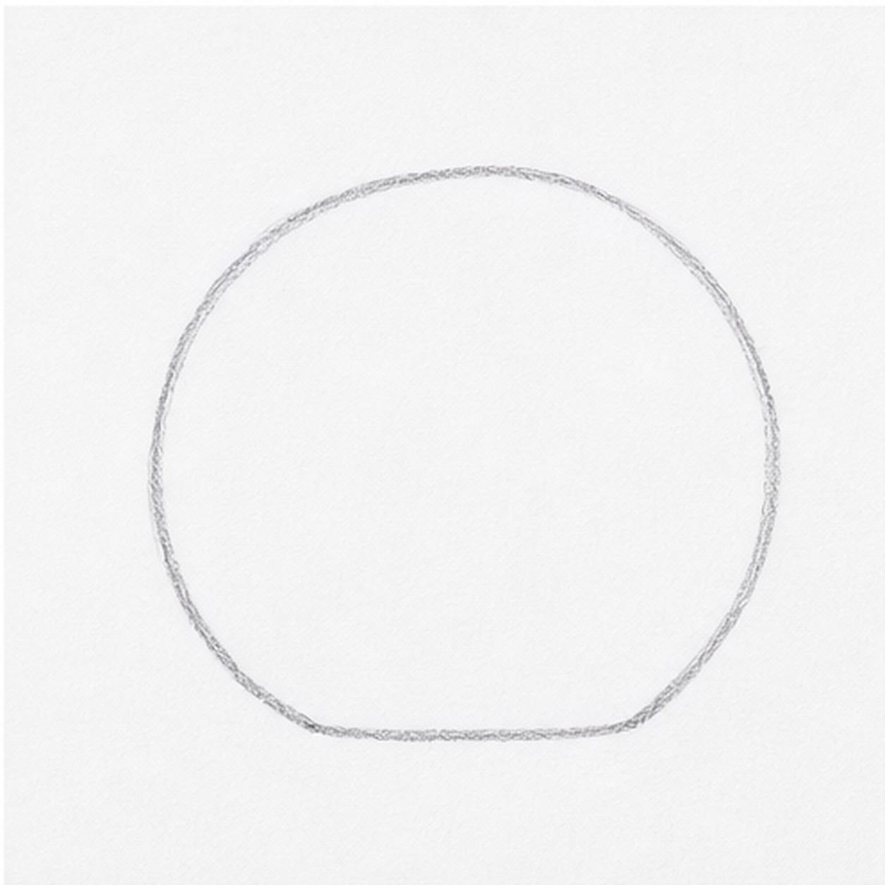
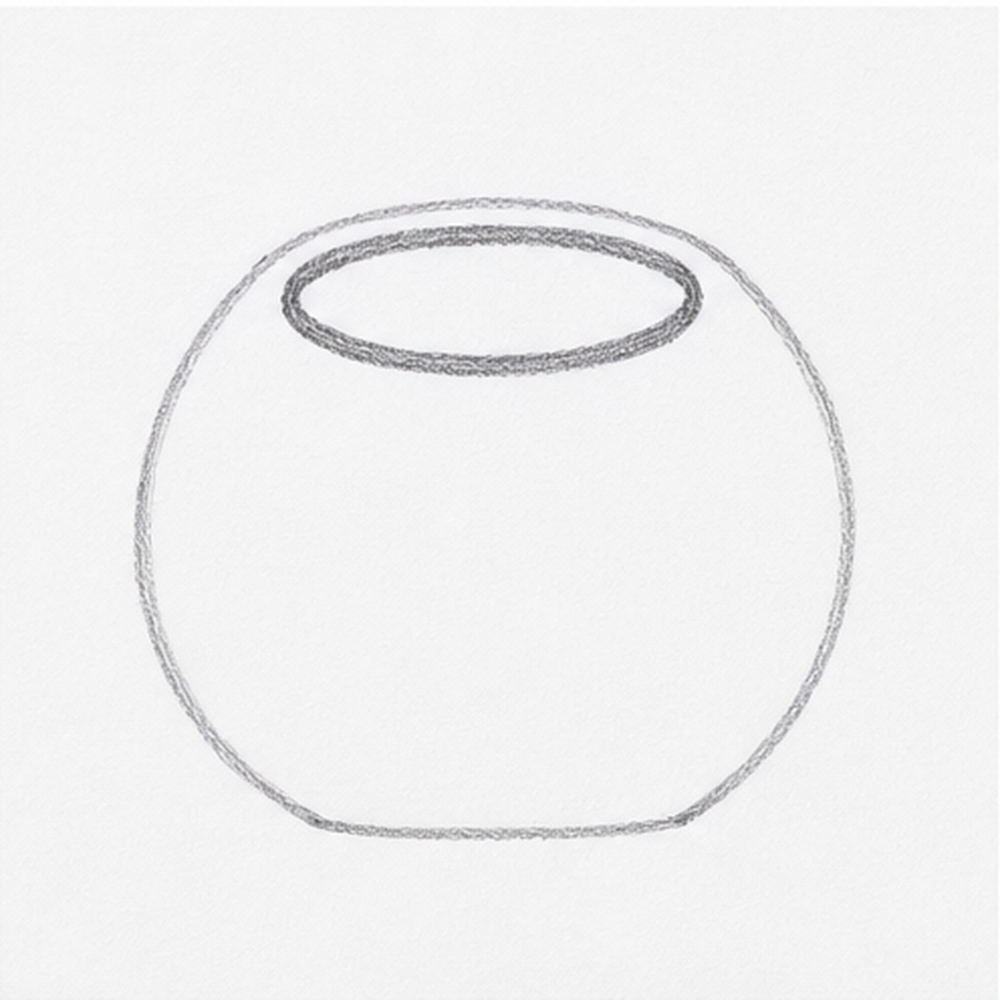
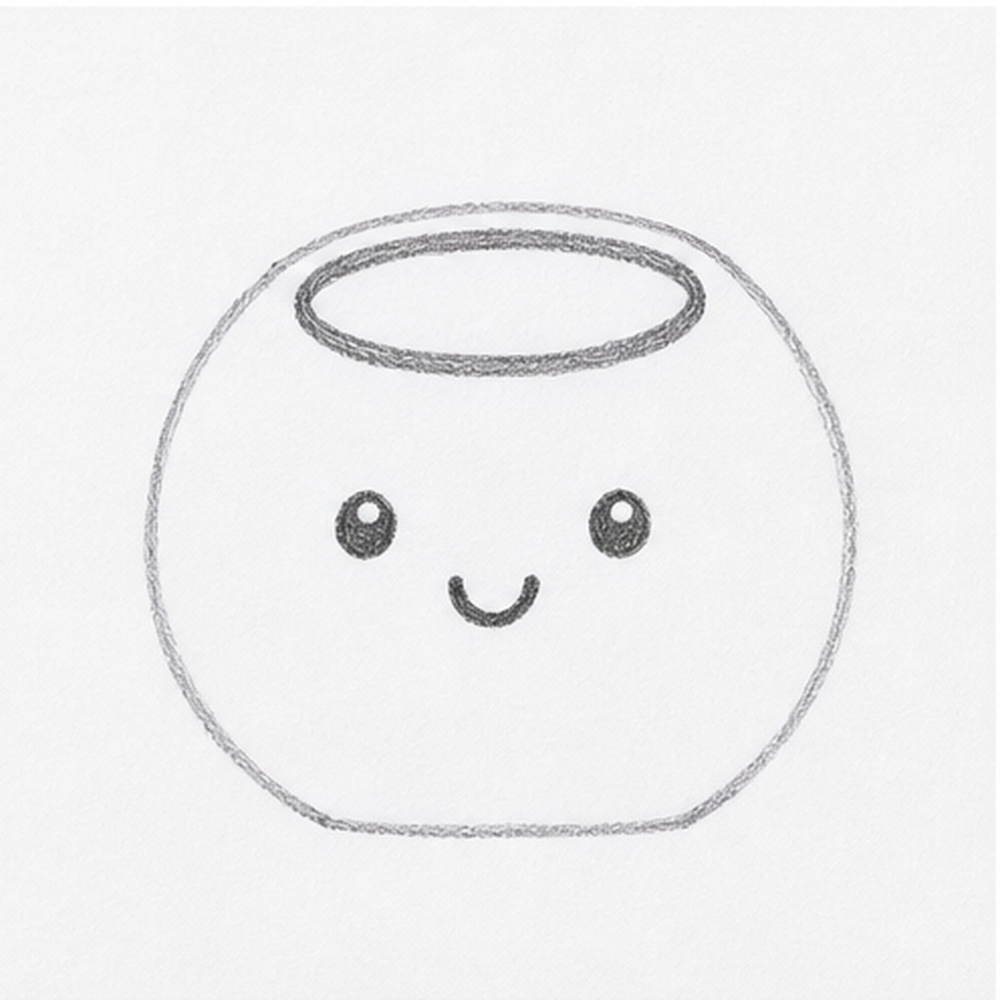
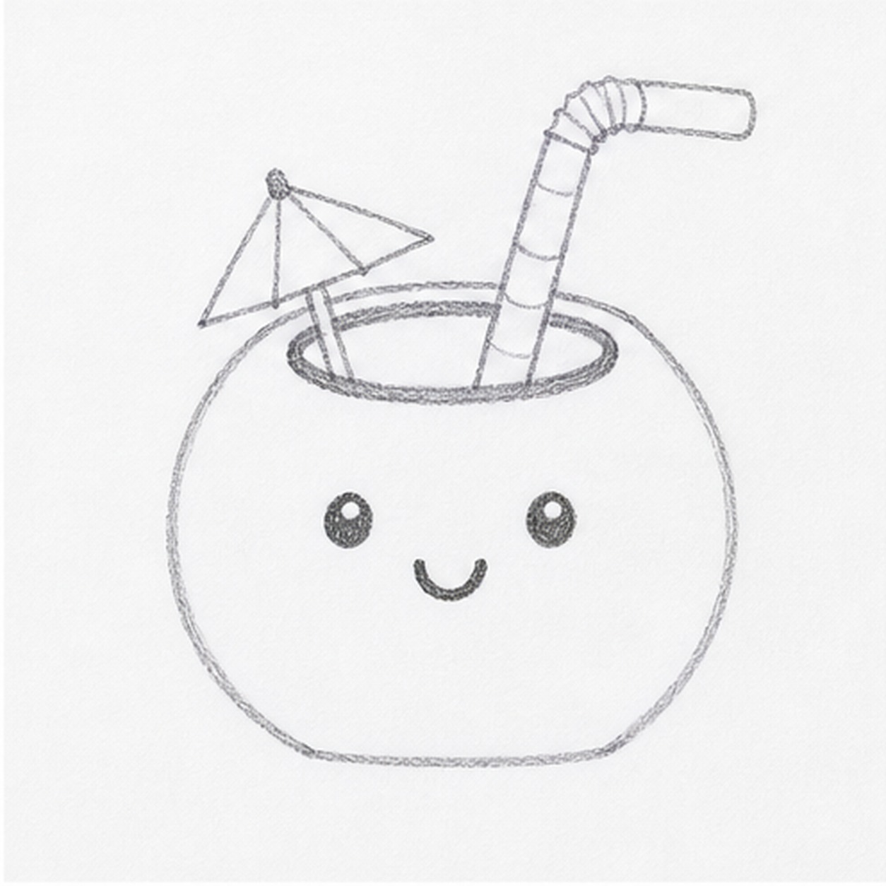
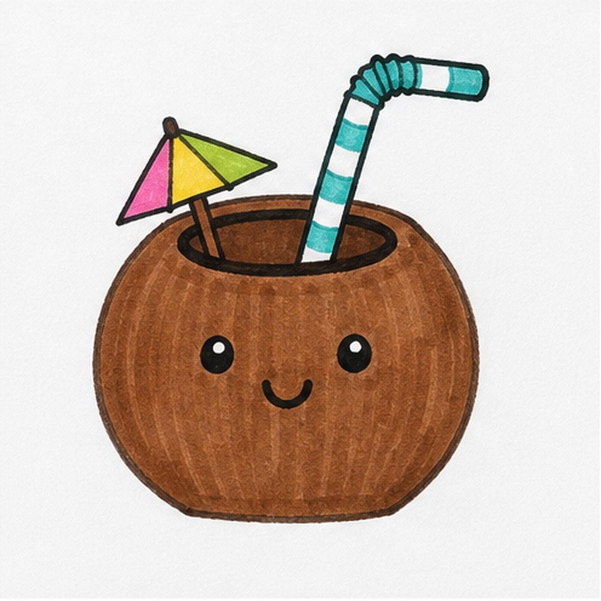

Marker ready?
Let's doodle a coconut drink
Use loose curves first, then switch to confident marker outlines and bright fills.
-
01

Start the coconut
Draw a big round coconut body with a slightly flattened base so it can sit firmly on the page.
Doodle tip: Keep the shape simple. The face, straw, and umbrella will bring the personality later.
-
02

Cut the top opening
Add a wide oval near the top and thicken its lower edge to make the dark drink rim.
Doodle tip: Place the oval inside the coconut, not on the outside edge. That keeps the top from looking like a hat.
-
03

Add the face
Draw two simple eyes and a small curved smile on the front of the coconut.
Doodle tip: Leave room above the face for the straw. A low face makes the coconut look rounder.
-
04

Add straw and umbrella
Draw a striped bendy straw leaning out of the top opening, then tuck a tiny triangle umbrella behind it.
Doodle tip: Let the umbrella overlap the rim a little. That overlap makes the drink pieces feel connected.
-
05

Fill the marker color
Fill the coconut brown, color the straw stripes teal, and add bright pink, yellow, and green sections to the umbrella.
Doodle tip: Color around the face slowly. Clean white eye highlights make the marker doodle feel crisp.
-
06

Punch up the coconut drink
Go back over the black outlines, strengthen the brown and bright marker fills, and clean only the edges you already drew.
Doodle tip: Do not add extra fruit or background props. The final pass is for bolder marker energy.